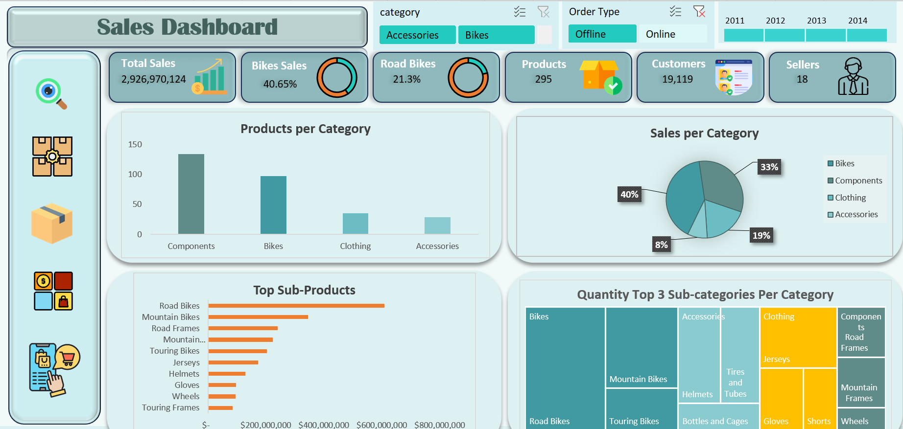
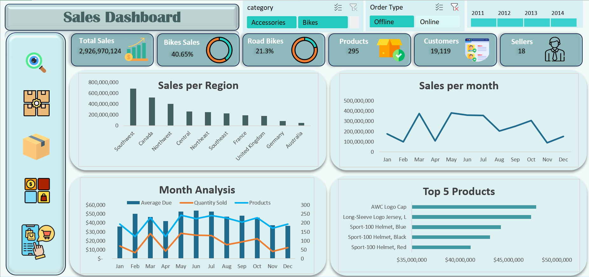
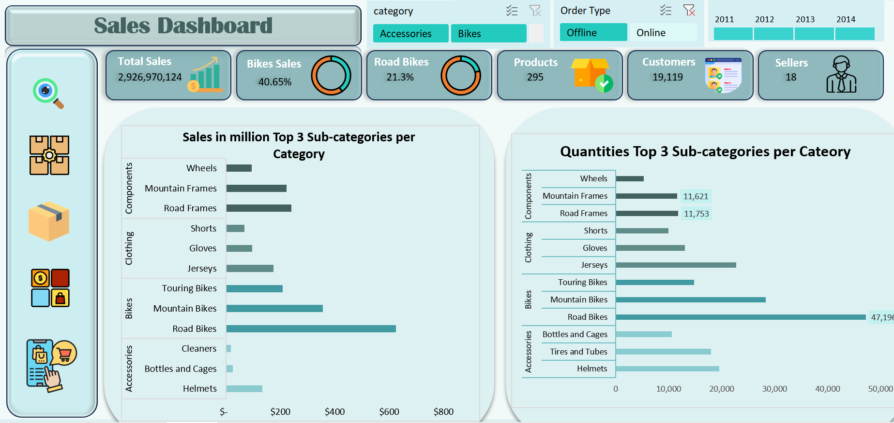
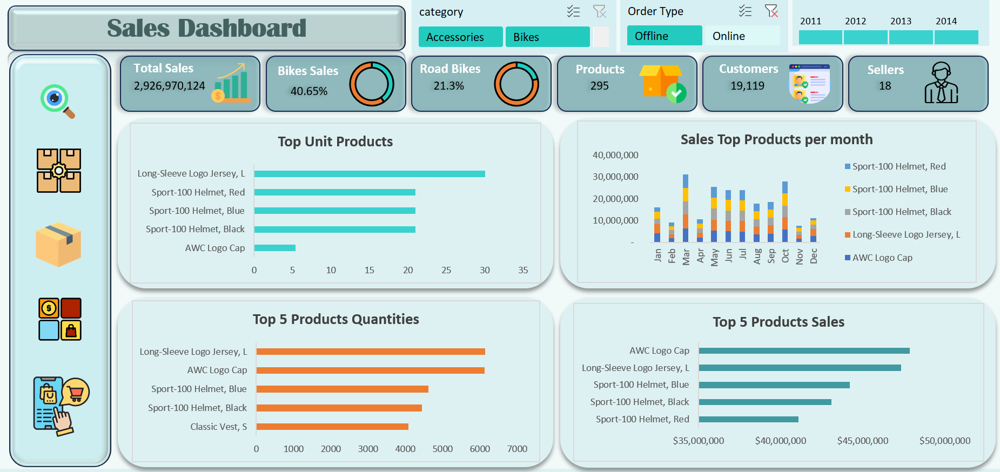

A multi-view Excel dashboard analyzing $2.93 billion in sales across 10 territories, 4 product categories, and 4 years (2011–2014) — built with PivotTables, PivotCharts, and interactive slicers.

This project uses the Adventure Works sample dataset — a Microsoft reference dataset representing a fictional sporting goods manufacturer — to build a comprehensive, multi-view sales analysis dashboard in Excel. The goal was to answer concrete business questions about performance across time, product categories, territories, and order channels.
Multi-year sales analysis for a sporting goods company selling Bikes, Components, Clothing, and Accessories across North America and Europe.
4 full years of transaction data spanning 2011 through 2014, enabling year-over-year and monthly trend analysis.
Southwest, Canada, Northwest, Central, Northeast, Southeast (North America) · France, United Kingdom, Germany, Australia (International).
Offline orders (3,806) and Online orders (27,659) captured separately, enabling channel mix analysis.
All values below are read directly from the dashboard or PivotTable output cells. None have been estimated or fabricated.
Source: PivotTable output in workbook Pivot Data sheet · values extracted programmatically
Observations derived from workbook data and dashboard visuals. Comparisons are based on displayed values. Causal explanations are not claimed unless directly supported by the data.
Southwest generated $696.9M in sales — the highest of all 10 territories and approximately 23.8% of total revenue. Canada follows at $527.0M. The three US-domestic territories (Southwest, Canada, Northwest) together account for the majority of total sales.
Road Bikes generated $624.9M, making it the highest-revenue subcategory by a significant margin. Mountain Bikes follow at $357.0M. Together, Road and Mountain Bikes account for approximately 33.6% of total sales.
Monthly sales data shows May ($391.0M) and March ($382.6M) as the two strongest months. November is the weakest month at $94.9M. February is the second-lowest at $103.4M. This creates a visible seasonal pattern with a mid-year peak and late-year softness.
Offline orders (3,806) generated $2.86B in sales — an average of approximately $752,000 per offline order. Online orders (27,659) generated $65.4M — an average of approximately $2,366 per online order. This difference is consistent with offline orders including bulk/wholesale Bike purchases versus smaller individual online accessory orders.
Components represent 31.79% of total sales — nearly as large as the entire Bikes category (40.65%). Within Components, Road Frames ($240.9M) and Mountain Frames ($222.7M) are the strongest subcategories. This suggests that accessory/parts purchases are a significant revenue stream alongside complete bicycles.
Road Bikes lead sales revenue at $624.9M but appear lower in unit quantity rankings. The top 5 products by quantity sold are dominated by low-unit-price accessories: Long-Sleeve Logo Jersey L (~6,000 units), AWC Logo Cap (~6,000 units), and Sport-100 Helmets across color variants. This illustrates the classic revenue-vs-volume trade-off in product mix analysis.
Questions the dashboard is designed to answer, with answers supported by workbook data.
The dashboard consists of multiple views navigable via the left sidebar icons. Screenshots show the actual Excel workbook with slicers active. These are static images — the interactive experience requires opening the Excel workbook.
Products per category, sales share by category (pie), top subcategory bar chart, quantity treemap by category.

Sales per region (bar), sales per month (line), monthly analysis combo chart (average order value, quantity, product count), top 5 products by revenue.

Top 3 subcategories per category by sales value and by quantity sold, enabling revenue-vs-volume comparison within each category.

Top 5 products by quantity units, by total sales, and monthly sales trend for top 5 products; average unit price comparison.
Features verified by programmatic workbook inspection and visual screenshot review.
A central hidden PivotTable sheet (Pivot Data) feeds all 18 charts with aggregated measures including SUM of TotalDue, DISTINCT COUNT of Orders, Customers, Products, and Salespeople.
Bar charts, horizontal bar charts, pie chart, line chart, doughnut charts (KPI gauges), multi-series combo chart, stacked bar chart — all linked to PivotTable data.
Three slicers visible in screenshots: Category (Accessories, Bikes, Clothing, Components), Order Type (Offline, Online), and Year (2011, 2012, 2013, 2014). These filter all charts simultaneously.
Six KPI cards across the top of the dashboard: Total Sales (with doughnut gauge), Bikes Sales % (doughnut), Road Bikes % (doughnut), Products count, Customers count, Sellers count.
5 visible dashboard sheets, each presenting a different analytical angle. Navigation icons on the left sidebar allow switching between views within the workbook.
Two hidden sheets (Statistics - Price, Statistics - Quantity) contain Excel Data Analysis ToolPak descriptive statistics outputs for price and quantity distributions (mean, median, standard deviation, skewness, kurtosis).
Sourced the Adventure Works sample dataset, which contains transactional sales data for a fictional sporting goods business. The dataset covers order-level records with product, customer, salesperson, territory, and financial fields.
Built PivotTables to aggregate the raw data by region, category, subcategory, product, month, year, and order channel. Applied DISTINCT COUNT for orders, customers, products, and salespeople. A dedicated hidden sheet (Pivot Data) holds all PivotTable computations.
Applied Excel's Data Analysis ToolPak to compute descriptive statistics on price and quantity distributions — examining mean, median, standard deviation, skewness, and kurtosis to understand data spread and outliers.
Designed 5 multi-view dashboard sheets with a consistent teal/slate color theme, KPI cards (including doughnut chart gauges), and a left sidebar navigation icon layout. Applied chart formatting, labels, and data callouts.
Connected three slicers (Category, Order Type, Year) to the PivotTables so a single filter selection updates all 18 charts simultaneously, enabling interactive exploration without VBA or macros.
Identified key patterns: regional performance hierarchy, seasonal sales rhythm, the revenue/volume trade-off between Bikes and accessories, and the asymmetric offline/online channel value split.
Click the download button below or clone the repository. Open Adventure Works Sales.xlsx in Microsoft Excel (2016 or later recommended for full slicer support).
If Excel shows a security bar, click Enable Content to allow the PivotTable connections to activate properly.
Use the icon panel on the left sidebar of the dashboard to switch between the 5 analytical views. Each view focuses on a different dimension of the data.
Click any button on the three slicers — Category, Order Type, and Year — to filter all charts on the dashboard simultaneously. Hold Ctrl to select multiple values.
Right-click any sheet tab and choose Unhide to access the hidden Pivot Data sheet (all PivotTables) and Statistics - Price / Statistics - Quantity sheets for deeper data exploration.